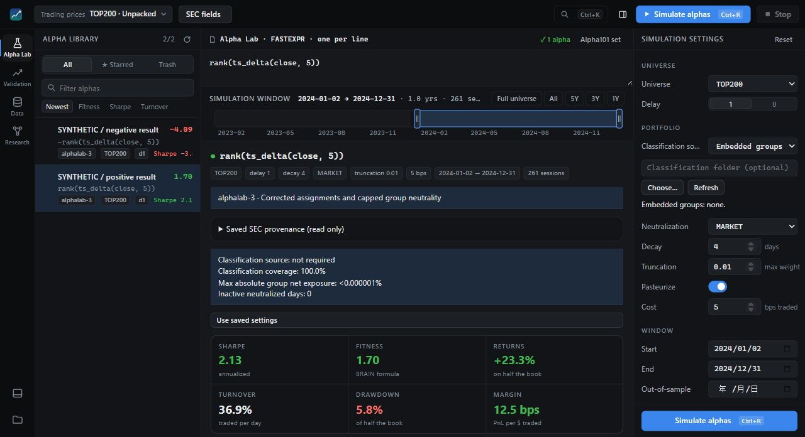

<title>Zhaohe (Eric) Dong</title>
<meta name="claude:viewport-fit-sides" content="cover">
<meta name="description" content="Zhaohe (Eric) Dong: machine learning for chemistry and materials science, verification of AI-generated research, and quantitative research at Tubby Labs.">
<link rel="preconnect" href="https://fonts.googleapis.com">
<link rel="preconnect" href="https://fonts.gstatic.com" crossorigin>
<link rel="stylesheet" href="https://fonts.googleapis.com/css2?family=Bricolage+Grotesque:opsz,wght@12..96,400;12..96,600;12..96,800&family=JetBrains+Mono:wght@400;500&family=Newsreader:ital,opsz,wght@0,6..72,400;0,6..72,500;1,6..72,400&display=swap">
<style>
/* Layout: a research record organised by thread. Hero + live instrument, a three-thread map that doubles as the contents, one § per thread (papers and software together), a month-by-month timeline, then about. Thread colour is the one organising key used everywhere. */
:root{
  --paper:#F1F2EE; --paper-2:#E8EAE4; --ink:#14171C; --muted:#5A626C; --rule:#D2D5CE;
  --accent:#2340C4; --hi:#E5B30F; --pass:#1D7A4B; --warn:#B4541B;
  --t1:#2340C4; --t2:#A47700; --t3:#B3305F; --t4:#0B7A83;
  --display:"Bricolage Grotesque","PingFang SC","Hiragino Sans GB","Noto Sans SC",system-ui,sans-serif;
  --serif:"Newsreader","Songti SC","Noto Serif SC",Georgia,"Times New Roman",serif;
  --mono:"JetBrains Mono","SF Mono",ui-monospace,Menlo,Consolas,monospace;
  --accent-soft:color-mix(in oklab,var(--accent) 12%,transparent);
  --hi-soft:color-mix(in oklab,var(--hi) 34%,transparent);
  --wrap:1140px; --tc:var(--accent);
}
@media (prefers-color-scheme:dark){:root:not([data-theme="light"]){
  --paper:#0E1114; --paper-2:#161A1F; --ink:#E6E8E3; --muted:#959DA7; --rule:#2A3037;
  --accent:#93A6FF; --hi:#F1C94A; --pass:#5DC28D; --warn:#E9925A;
  --t1:#93A6FF; --t2:#F1C94A; --t3:#F07AA0; --t4:#4FD1C5; color-scheme:dark}}
:root[data-theme="dark"]{
  --paper:#0E1114; --paper-2:#161A1F; --ink:#E6E8E3; --muted:#959DA7; --rule:#2A3037;
  --accent:#93A6FF; --hi:#F1C94A; --pass:#5DC28D; --warn:#E9925A;
  --t1:#93A6FF; --t2:#F1C94A; --t3:#F07AA0; --t4:#4FD1C5; color-scheme:dark}
:root[data-theme="light"]{color-scheme:light}
.th1{--tc:var(--t1)} .th2{--tc:var(--t2)} .th3{--tc:var(--t3)} .th4{--tc:var(--t4)}

*{box-sizing:border-box}
html{scroll-behavior:smooth;scroll-padding-top:76px}
@media (max-width:820px){html{scroll-padding-top:104px}}
@media (prefers-reduced-motion:reduce){html{scroll-behavior:auto}}
body{background:var(--paper);color:var(--ink);font:400 18px/1.6 var(--serif);
  -webkit-font-smoothing:antialiased;text-rendering:optimizeLegibility;margin:0}
body::before{content:"";position:fixed;inset:0 0 auto;height:env(safe-area-inset-top,0px);z-index:10;background:var(--paper)}
sub{font-size:.7em;line-height:0}
a{color:inherit;text-decoration-color:color-mix(in oklab,currentColor 35%,transparent);text-underline-offset:3px;text-decoration-thickness:1px}
a:hover{text-decoration-color:currentColor}
:focus-visible{outline:2px solid var(--accent);outline-offset:3px;border-radius:2px}
.wrap{max-width:var(--wrap);margin:0 auto;padding-left:max(20px,env(safe-area-inset-left,0px));padding-right:max(20px,env(safe-area-inset-right,0px))}
.mono{font-family:var(--mono);font-size:12.5px;letter-spacing:.02em}
.label{font-family:var(--mono);font-size:11.5px;letter-spacing:.09em;text-transform:uppercase;color:var(--muted)}
h1,h2,h3,h4{font-family:var(--display);text-wrap:balance;margin:0;font-weight:600}
p{margin:0}
.tdot{display:inline-block;width:8px;height:8px;border-radius:50%;background:var(--tc);flex:none}

/* top bar */
.bar{position:sticky;top:env(safe-area-inset-top,0px);z-index:9;background:color-mix(in oklab,var(--paper) 86%,transparent);
  backdrop-filter:saturate(1.4) blur(14px);-webkit-backdrop-filter:saturate(1.4) blur(14px);border-bottom:1px solid transparent;transition:border-color .3s}
.bar.scrolled{border-bottom-color:var(--rule)}
.bar .wrap{display:flex;align-items:center;gap:24px;min-height:58px}
.prog{position:absolute;left:0;right:0;bottom:-1px;height:2px;background:var(--accent);transform-origin:left;transform:scaleX(0)}
.mark{font-family:var(--display);font-weight:800;font-size:17px;letter-spacing:-.02em;text-decoration:none;white-space:nowrap}
.mark span{color:var(--accent)}
.nav{display:flex;gap:2px;margin-left:auto;overflow-x:auto;scrollbar-width:none;min-width:0}
.nav::-webkit-scrollbar{display:none}
.nav a{display:inline-flex;align-items:center;gap:7px;font-family:var(--mono);font-size:12px;text-decoration:none;color:var(--muted);padding:6px 9px;border-radius:6px;white-space:nowrap;transition:color .2s,background .2s}
.nav a:hover,.nav a.on{color:var(--ink);background:var(--paper-2)}
.nav a .tdot{width:6px;height:6px}
.nav a b{font-weight:400;color:var(--muted)}
.tools{display:flex;gap:6px;flex:none}
.tbtn{font:500 12px var(--mono);color:var(--ink);background:transparent;border:1px solid var(--rule);border-radius:7px;height:30px;min-width:34px;padding:0 9px;cursor:pointer;transition:border-color .2s,background .2s}
.tbtn:hover{border-color:var(--ink)}
@media (max-width:820px){
  .bar .wrap{flex-wrap:wrap;row-gap:0;padding-top:8px}
  .tools{margin-left:auto}
  .nav{order:3;flex-basis:100%;margin:2px 0 0 -9px;padding-bottom:6px}
}

/* hero */
.hero{padding-block:clamp(40px,7vw,88px) clamp(36px,5vw,60px)}
.hero .wrap{display:grid;grid-template-columns:minmax(0,1.02fr) minmax(0,1fr);gap:clamp(28px,5vw,72px);align-items:end}
@media (max-width:900px){.hero .wrap{grid-template-columns:1fr}}
.eyebrow{display:flex;gap:12px;align-items:baseline;margin-bottom:28px}
.dot{flex:none;width:7px;height:7px;border-radius:50%;background:var(--pass);transform:translateY(-1px);box-shadow:0 0 0 4px color-mix(in oklab,var(--pass) 18%,transparent);animation:breathe 3.2s ease-in-out infinite}
@keyframes breathe{50%{box-shadow:0 0 0 7px color-mix(in oklab,var(--pass) 6%,transparent)}}
.name{font-weight:800;font-size:clamp(58px,9.4vw,124px);line-height:.88;letter-spacing:-.045em;font-variation-settings:"opsz" 96}
.name .alt{display:block;font-weight:400;font-size:.36em;letter-spacing:-.02em;color:var(--muted);margin-top:.28em;font-family:var(--serif);font-style:italic}
.lede{font-size:clamp(19px,1.6vw,22px);line-height:1.5;max-width:31em;margin-top:30px}
.lede mark{background:linear-gradient(transparent 58%,var(--hi-soft) 58%);color:inherit;padding:0 .08em}
.facts{display:flex;flex-wrap:wrap;gap:10px 28px;margin-top:34px;padding-top:20px;border-top:1px solid var(--rule)}
.fact{display:flex;flex-direction:column;gap:2px}
.fact strong{font:600 26px/1 var(--display);letter-spacing:-.02em;font-variant-numeric:tabular-nums}
.fact span{font:12px var(--mono);color:var(--muted)}
.ctas{display:flex;flex-wrap:wrap;gap:10px;margin-top:28px}
.btn{display:inline-flex;align-items:center;gap:8px;font:500 13px var(--mono);text-decoration:none;padding:11px 16px;border-radius:9px;border:1px solid var(--ink);transition:transform .2s,background .2s,color .2s}
.btn.solid{background:var(--ink);color:var(--paper)}
.btn:hover{transform:translateY(-1px)}
.btn.solid:hover{background:var(--accent);border-color:var(--accent)}
.btn svg{width:15px;height:15px}

/* instrument */
.inst{border:1px solid var(--rule);border-radius:14px;background:var(--paper-2);overflow:hidden;position:relative}
.inst-head{display:flex;justify-content:space-between;gap:12px;flex-wrap:wrap;padding:12px 16px;border-bottom:1px solid var(--rule)}
.inst canvas{display:block;width:100%;height:clamp(300px,34vw,400px);touch-action:pan-y;cursor:ew-resize}
.inst-foot{display:flex;justify-content:space-between;gap:10px 18px;flex-wrap:wrap;padding:11px 16px;border-top:1px solid var(--rule);font-variant-numeric:tabular-nums}
.inst-foot .val{color:var(--ink)}
.inst-foot .ok{color:var(--pass)}
.cap{font-size:15px;line-height:1.55;color:var(--muted);margin-top:14px;max-width:38em}
.cap b{font-family:var(--mono);font-size:12px;font-weight:500;color:var(--ink);letter-spacing:.04em;margin-right:6px}

/* thread map (contents) */
.mapsec{padding-block:0 clamp(48px,7vw,88px)}
.map{display:grid;grid-template-columns:repeat(4,minmax(0,1fr));border-top:1px solid var(--ink);border-bottom:1px solid var(--rule)}
@media (max-width:1000px){.map{grid-template-columns:repeat(2,minmax(0,1fr))}}
@media (max-width:600px){.map{grid-template-columns:1fr}}
.thread{display:flex;flex-direction:column;gap:12px;padding:24px 20px 26px;border-left:1px solid var(--rule);text-decoration:none;min-width:0;position:relative;transition:background .25s}
.thread:first-child{border-left:0;padding-left:0}
.thread:last-child{padding-right:0}
@media (max-width:1000px) and (min-width:601px){.thread:nth-child(odd){border-left:0;padding-left:0}.thread:nth-child(even){padding-right:20px}.thread:nth-child(n+3){border-top:1px solid var(--rule)}.thread:nth-child(2n){padding-right:0}}
@media (max-width:600px){.thread,.thread:first-child,.thread:last-child{border-left:0;border-top:1px solid var(--rule);padding:22px 0}.thread:first-child{border-top:0}}
.thread .top{display:flex;align-items:center;justify-content:space-between;gap:10px}
.thread .no{font:500 13px var(--mono);color:var(--tc);display:inline-flex;align-items:center;gap:8px}
.thread .go{font-family:var(--mono);color:var(--muted);transition:transform .25s,color .2s}
.thread h3{font-size:clamp(22px,2.1vw,26px);line-height:1.12;letter-spacing:-.022em;transition:color .2s}
.thread p{font-size:16px;line-height:1.5;color:var(--muted)}
.thread ul{list-style:none;margin:4px 0 0;padding:0;display:flex;flex-wrap:wrap;gap:6px}
.thread li{font:12px var(--mono);padding:3px 8px;border-radius:6px;border:1px solid var(--rule);color:color-mix(in oklab,var(--ink) 78%,var(--paper))}
.thread:hover h3{color:var(--tc)}
.thread:hover .go{transform:translateY(3px);color:var(--tc)}

/* sections */
section.s{padding-block:clamp(56px,8vw,104px);border-top:1px solid var(--rule)}
.shead{display:grid;grid-template-columns:140px minmax(0,1fr);gap:20px;align-items:baseline;margin-bottom:clamp(30px,4vw,48px)}
@media (max-width:720px){.shead{grid-template-columns:1fr;gap:8px}}
.sno{font:500 13px var(--mono);color:var(--tc);display:inline-flex;align-items:center;gap:8px}
.shead h2{font-size:clamp(34px,4.6vw,56px);line-height:1;letter-spacing:-.035em}
.shead p{grid-column:2;color:var(--muted);max-width:36em;margin-top:14px;font-size:18px}
@media (max-width:720px){.shead p{grid-column:1}}
.sub{display:grid;grid-template-columns:140px minmax(0,1fr);gap:20px;align-items:baseline;margin-top:clamp(48px,6vw,72px);padding-bottom:14px}
.shead+.sub{margin-top:0}
.sub h3{font:500 12px var(--mono);letter-spacing:.09em;text-transform:uppercase;color:var(--ink)}
.sub span{font:12px var(--mono);color:var(--muted)}
@media (max-width:720px){.sub{grid-template-columns:auto 1fr;gap:12px}}

/* papers */
.papers{display:flex;flex-direction:column}
.paper{display:grid;grid-template-columns:140px minmax(0,1fr) 230px;gap:20px;padding-block:26px;border-top:1px solid var(--rule);position:relative}
.paper:last-child{border-bottom:1px solid var(--rule)}
.paper::before{content:"";position:absolute;left:0;right:0;top:-1px;height:1px;background:var(--tc);transform:scaleX(0);transform-origin:left;transition:transform .5s cubic-bezier(.2,.7,.2,1)}
.paper:hover::before{transform:scaleX(1)}
.p-meta{display:flex;flex-direction:column;gap:6px}
.p-meta .mono{color:var(--muted)}
.status{white-space:nowrap;display:inline-flex;align-self:flex-start;align-items:center;gap:6px;font:500 11px var(--mono);letter-spacing:.06em;text-transform:uppercase;padding:3px 8px;border-radius:99px;border:1px solid var(--rule);color:var(--muted)}
.status.live{color:var(--pass);border-color:color-mix(in oklab,var(--pass) 45%,transparent)}
.status.live::before{content:"";width:5px;height:5px;border-radius:50%;background:currentColor}
.paper h4{font-size:clamp(20px,1.9vw,24px);line-height:1.2;letter-spacing:-.018em}
.paper .find{margin-top:10px;color:color-mix(in oklab,var(--ink) 82%,var(--paper));max-width:40em}
.links{display:flex;flex-wrap:wrap;gap:6px 16px;margin-top:14px}
.links a{font:500 12.5px var(--mono);color:var(--accent);text-decoration:none}
.links a:hover{text-decoration:underline}
.num{border-left:1px solid var(--rule);padding-left:18px;align-self:start}
.num strong{display:block;font:600 30px/1.05 var(--display);letter-spacing:-.03em;font-variant-numeric:tabular-nums}
.num strong .ci{font:400 16px var(--mono);letter-spacing:0;color:var(--tc);white-space:nowrap}
.num span{display:block;font:12.5px/1.45 var(--mono);color:var(--muted);margin-top:8px}
@media (max-width:900px){.paper{grid-template-columns:minmax(0,1fr)}.num{border-left:0;padding-left:0;border-top:1px dashed var(--rule);padding-top:14px}.p-meta{flex-direction:row;flex-wrap:wrap;align-items:center;gap:10px}}

/* software rows */
.sws{border-top:1px solid var(--rule)}
.sw{display:grid;grid-template-columns:140px minmax(0,1fr) 190px 64px;gap:20px;align-items:baseline;padding-block:20px;border-bottom:1px solid var(--rule);text-decoration:none;transition:background .2s}
.sw .when{font:12px var(--mono);color:var(--muted)}
.sw h4{font-size:20px;line-height:1.25;letter-spacing:-.015em;transition:color .2s}
.sw p{font-size:16.5px;line-height:1.5;margin-top:4px;color:color-mix(in oklab,var(--ink) 80%,var(--paper))}
.sw .meta{display:flex;flex-direction:column;gap:4px;font:12px var(--mono);color:var(--muted)}
.sw .arrow{font-family:var(--mono);color:var(--muted);transition:transform .25s,color .2s;text-align:right}
.sw:hover h4,.sw:hover .arrow{color:var(--tc)}
.sw:hover .arrow{transform:translate(3px,-3px)}
@media (max-width:900px){.sw{grid-template-columns:minmax(0,1fr) auto;gap:6px 14px}.sw .when{grid-column:1}.sw .meta{flex-direction:row;flex-wrap:wrap;gap:4px 14px;grid-column:1}.sw .arrow{grid-column:2;grid-row:1}}
.lang{display:inline-flex;align-items:center;gap:6px}
.lang::before{content:"";width:8px;height:8px;border-radius:50%;background:var(--c,#999)}

/* crossaudit */
.ca{display:grid;grid-template-columns:minmax(0,1fr) minmax(0,1fr);gap:clamp(28px,5vw,64px)}
@media (max-width:900px){.ca{grid-template-columns:1fr}}
.ca-lede{font-size:clamp(20px,1.8vw,23px);line-height:1.5}
.quote{font:600 clamp(28px,3.4vw,42px)/1.08 var(--display);letter-spacing:-.03em;margin-top:30px}
.quote em{font-style:normal;background:linear-gradient(transparent 62%,var(--hi-soft) 62%)}
.quote-src{margin-top:12px}
.chips{display:flex;flex-wrap:wrap;gap:8px;margin-top:26px}
.chip{font:500 12px var(--mono);padding:5px 10px;border-radius:7px;background:var(--paper-2);border:1px solid var(--rule)}
.chart{border:1px solid var(--rule);border-radius:14px;padding:22px 22px 18px;background:var(--paper-2)}
.chart h4{font-size:17px;letter-spacing:-.01em;margin-bottom:4px}
.metric{margin-top:22px}
.metric:first-of-type{margin-top:16px}
.row{display:grid;grid-template-columns:150px minmax(0,1fr) 54px;gap:12px;align-items:center;margin-top:9px}
@media (max-width:520px){.row{grid-template-columns:96px minmax(0,1fr) 48px}}
.row .who{font:12px/1.3 var(--mono);color:var(--muted)}
.track{height:12px;background:color-mix(in oklab,var(--ink) 7%,transparent);border-radius:3px;overflow:hidden;position:relative}
.track i{position:absolute;inset:0 auto 0 0;border-radius:3px;background:var(--muted);width:0;transition:width 1.2s cubic-bezier(.2,.7,.2,1)}
.track i.x{background:var(--accent)}
.row .pct{font:500 13px var(--mono);text-align:right;font-variant-numeric:tabular-nums}
.axis{display:grid;grid-template-columns:150px minmax(0,1fr) 54px;gap:12px;margin-top:6px}
@media (max-width:520px){.axis{grid-template-columns:96px minmax(0,1fr) 48px}}
.axis div{display:flex;justify-content:space-between;font:10.5px var(--mono);color:var(--muted)}
.chart .note{font-size:14px;color:var(--muted);margin-top:18px;line-height:1.5}

.flow{display:grid;grid-template-columns:repeat(5,minmax(0,1fr));margin-top:clamp(32px,4vw,48px);border:1px solid var(--rule);border-radius:14px;overflow:hidden}
.step{padding:18px 18px 20px;border-right:1px solid var(--rule);position:relative;min-width:0}
.step:last-child{border-right:0}
.step .k{font:500 11px var(--mono);color:var(--accent);letter-spacing:.08em}
.step h5{font:600 17px/1.2 var(--display);margin:10px 0 6px;letter-spacing:-.01em}
.step p{font-size:15px;line-height:1.45;color:var(--muted)}
.verdicts{display:flex;flex-wrap:wrap;gap:5px;margin-top:10px}
.v{font:500 10.5px var(--mono);padding:3px 7px;border-radius:5px;border:1px solid}
.v.p{color:var(--pass);border-color:color-mix(in oklab,var(--pass) 45%,transparent)}
.v.c{color:var(--warn);border-color:color-mix(in oklab,var(--warn) 45%,transparent)}
.v.y{color:var(--accent);border-color:color-mix(in oklab,var(--accent) 45%,transparent)}
.step.seal{background:var(--accent-soft)}
.step .hash{font:11px/1.5 var(--mono);color:var(--muted);margin-top:10px;overflow-wrap:anywhere}
@media (max-width:900px){.flow{grid-template-columns:1fr}.step{border-right:0;border-bottom:1px solid var(--rule);display:grid;grid-template-columns:34px minmax(0,1fr);padding:16px 18px}.step:last-child{border-bottom:0}.step>*{grid-column:2}.step>.k{grid-column:1;grid-row:1 / span 3;padding-top:3px}.step h5{margin-top:0}}

/* lineage rail */
.lin{display:grid;grid-template-columns:repeat(5,minmax(0,1fr));position:relative;margin-top:6px}
.lin::before{content:"";position:absolute;left:5px;right:0;top:5px;height:1px;background:var(--rule)}
.node{position:relative;padding:22px 14px 0 0;text-decoration:none;min-width:0}
.node::before{content:"";position:absolute;left:0;top:0;width:11px;height:11px;border-radius:50%;background:var(--paper);border:1.5px solid var(--muted);box-sizing:border-box}
.node.now::before{background:var(--accent);border-color:var(--accent);box-shadow:0 0 0 4px var(--accent-soft)}
.node .d{font:11.5px var(--mono);color:var(--muted)}
.node b{display:block;font:600 15.5px/1.25 var(--display);margin-top:4px;transition:color .2s}
.node span{display:block;font-size:14.5px;line-height:1.4;color:var(--muted);margin-top:3px}
.node:hover b{color:var(--accent)}
@media (max-width:760px){.lin{grid-template-columns:1fr;gap:16px}.lin::before{left:5px;right:auto;top:6px;bottom:6px;width:1px;height:auto}.node{padding:0 0 0 26px}}

/* handbooks */
.books{display:grid;grid-template-columns:repeat(2,minmax(0,1fr));gap:22px}
@media (max-width:860px){.books{grid-template-columns:1fr}}
.book{border:1px solid var(--rule);border-radius:14px;padding:26px;display:flex;flex-direction:column;gap:14px;background:var(--paper);position:relative;overflow:hidden;min-width:0}
.book .spine{position:absolute;left:0;top:0;bottom:0;width:5px;background:var(--tc)}
.book h4{font-size:clamp(23px,2.3vw,28px);letter-spacing:-.025em;line-height:1.1}
.book p:not(.label){font-size:16.5px;line-height:1.55;color:color-mix(in oklab,var(--ink) 82%,var(--paper))}
.toc{list-style:none;margin:0;padding:0;display:flex;flex-direction:column;border-top:1px solid var(--rule)}
.toc li{display:grid;grid-template-columns:44px minmax(0,1fr) auto;gap:10px;padding:7px 0;border-bottom:1px dashed var(--rule);font-size:15px;align-items:baseline}
.toc li .r{font:500 11.5px var(--mono);color:var(--tc)}
.toc li .c{font:11.5px var(--mono);color:var(--muted);white-space:nowrap}
.book .links{margin-top:auto;padding-top:4px}

/* tubby labs */
.org{display:grid;grid-template-columns:minmax(0,.9fr) minmax(0,1.1fr);gap:clamp(28px,4vw,56px);align-items:start}
@media (max-width:900px){.org{grid-template-columns:1fr}}
.org .ca-lede+p{margin-top:16px;color:color-mix(in oklab,var(--ink) 80%,var(--paper))}
.shot{margin:0}
.shot img{display:block;width:100%;height:auto;border-radius:12px;border:1px solid var(--rule);background:var(--paper-2)}
.shot figcaption{font-size:14.5px;line-height:1.5;color:var(--muted);margin-top:10px}
.th4 .flow .step .k{color:var(--tc)}
.th4 .step.seal{background:color-mix(in oklab,var(--tc) 12%,transparent)}
.sw.priv{cursor:default}
.sw .tag{font:11px var(--mono);letter-spacing:.06em;text-transform:uppercase;color:var(--muted);text-align:right;white-space:nowrap}
.sw.priv:hover h4{color:inherit}
@media (max-width:900px){.sw .tag{grid-column:2;grid-row:1}.sw>div:first-of-type{grid-column:1 / -1}}
.disc{font:12.5px/1.5 var(--mono);color:var(--muted);margin-top:16px}

/* timeline */
.tl{border-top:1px solid var(--ink)}
.month{display:grid;grid-template-columns:140px minmax(0,1fr);gap:20px;border-bottom:1px solid var(--rule);padding-block:16px}
@media (max-width:720px){.month{grid-template-columns:52px minmax(0,1fr);gap:12px}}
.month h3{font:600 26px/1 var(--display);letter-spacing:-.03em;padding-top:6px}
.month h3 small{display:block;font:11px var(--mono);letter-spacing:.08em;color:var(--muted);margin-top:6px;text-transform:uppercase}
.month ol{list-style:none;margin:0;padding:0}
.ti{display:grid;grid-template-columns:34px 12px minmax(0,1fr) auto;gap:10px;align-items:baseline;padding:6px 0}
.ti .dd{font:12px var(--mono);color:var(--muted);font-variant-numeric:tabular-nums}
.ti .tdot{transform:translateY(-1px)}
.ti a{text-decoration:none;font-size:17px}
.ti a:hover{color:var(--tc);text-decoration:underline}
.ti .ty{font:11px var(--mono);letter-spacing:.06em;text-transform:uppercase;color:var(--muted)}
@media (max-width:520px){.ti{grid-template-columns:26px 10px minmax(0,1fr)}.ti .ty{display:none}}
.legend{display:flex;flex-wrap:wrap;gap:8px 20px;margin-top:18px}
.legend span{display:inline-flex;align-items:center;gap:8px;font:12px var(--mono);color:var(--muted)}

/* about */
.about{display:grid;grid-template-columns:minmax(0,1.15fr) minmax(0,1fr);gap:clamp(28px,5vw,64px);align-items:start}
@media (max-width:860px){.about{grid-template-columns:1fr}}
.bio{font-size:clamp(20px,1.8vw,23px);line-height:1.5}
.big{font:800 clamp(40px,5.6vw,76px)/.95 var(--display);letter-spacing:-.045em;margin-top:34px}
.big a{text-decoration:none;background:linear-gradient(var(--accent),var(--accent)) no-repeat left 92%/0 .08em;transition:background-size .5s cubic-bezier(.2,.7,.2,1)}
.big a:hover{background-size:100% .08em}
.term{font:13px/1.75 var(--mono);background:var(--paper-2);border:1px solid var(--rule);border-radius:12px;padding:18px 20px;overflow-x:auto;white-space:pre;margin:0}
.term .pr{color:var(--accent)} .term .ok{color:var(--pass)} .term .mu{color:var(--muted)}
.rules{display:grid;grid-template-columns:repeat(3,minmax(0,1fr));border-top:1px solid var(--rule);margin-top:clamp(40px,5vw,64px)}
@media (max-width:900px){.rules{grid-template-columns:repeat(2,minmax(0,1fr))}}
@media (max-width:600px){.rules{grid-template-columns:1fr}}
.rule{padding:22px 22px 24px 0;border-bottom:1px solid var(--rule);display:flex;flex-direction:column;gap:12px;justify-content:space-between}
.rule p{font:400 clamp(18px,1.6vw,21px)/1.38 var(--serif);font-style:italic}
.rule p::before{content:"“";color:var(--accent)} .rule p::after{content:"”";color:var(--accent)}
footer{border-top:1px solid var(--rule);padding-block:28px 40px}
footer .wrap{display:flex;justify-content:space-between;flex-wrap:wrap;gap:10px 24px}

/* reveal: content is visible at rest; motion only enhances */
.rv{transition:transform .8s cubic-bezier(.2,.7,.2,1),opacity .8s}
.js .rv.pre{transform:translateY(14px);opacity:.001}
@media (prefers-reduced-motion:reduce){.rv{transition:none}.js .rv.pre{transform:none;opacity:1}.dot{animation:none}.track i{transition:none}}
</style>

<header class="bar" id="bar">
  <div class="wrap">
    <a class="mark" href="#top">Z. Dong<span>.</span></a>
    <nav class="nav" aria-label="Sections">
      <a href="#audit" class="th1"><span class="tdot"></span><b>§1</b><span>Audit</span></a>
      <a href="#materials" class="th2"><span class="tdot"></span><b>§2</b><span>Materials ML</span></a>
      <a href="#teaching" class="th3"><span class="tdot"></span><b>§3</b><span>Tools &amp; teaching</span></a>
      <a href="#markets" class="th4"><span class="tdot"></span><b>§4</b><span>Markets</span></a>
      <a href="#timeline"><b>§5</b><span>Timeline</span></a>
      <a href="#about"><b>§6</b><span>About</span></a>
    </nav>
    <div class="tools">
      <button class="tbtn" id="themeBtn" type="button" aria-label="Switch colour theme">◐</button>
    </div>
  </div>
  <div class="prog" id="prog" aria-hidden="true"></div>
</header>

<main id="top">
<section class="hero">
  <div class="wrap">
    <div class="rv">
      <div class="eyebrow">
        <span class="dot" aria-hidden="true"></span>
        <span class="label">Cambridge · co-founder, Tubby Labs · ML for science × audited AI</span>
      </div>
      <h1 class="name">Zhaohe Dong<span class="alt">Machine learning for science, built to be checked.</span></h1>
      <p class="lede">Undergraduate researcher working on machine learning for chemistry and materials science, and on <mark>verification of AI-generated research</mark> through cross-vendor audit and deterministic checks. Co-founder of Tubby Labs, a quantitative research team.</p>
      <div class="facts">
        <div class="fact"><strong>5</strong><span>papers &amp; preprints</span></div>
        <div class="fact"><strong>3,866</strong><span>contributions, past year</span></div>
        <div class="fact"><strong>36</strong><span>repositories</span></div>
      </div>
      <div class="ctas">
        <a class="btn solid" href="https://github.com/dongzhaohe321418-lab" target="_blank" rel="noopener">
          <svg viewBox="0 0 16 16" fill="currentColor" aria-hidden="true"><path d="M8 0C3.58 0 0 3.58 0 8c0 3.54 2.29 6.53 5.47 7.59.4.07.55-.17.55-.38 0-.19-.01-.82-.01-1.49-2.01.37-2.53-.49-2.69-.94-.09-.23-.48-.94-.82-1.13-.28-.15-.68-.52-.01-.53.63-.01 1.08.58 1.23.82.72 1.21 1.87.87 2.33.66.07-.52.28-.87.51-1.07-1.78-.2-3.64-.89-3.64-3.95 0-.87.31-1.59.82-2.15-.08-.2-.36-1.02.08-2.12 0 0 .67-.21 2.2.82.64-.18 1.32-.27 2-.27.68 0 1.36.09 2 .27 1.53-1.04 2.2-.82 2.2-.82.44 1.1.16 1.92.08 2.12.51.56.82 1.27.82 2.15 0 3.07-1.87 3.75-3.65 3.95.29.25.54.73.54 1.48 0 1.07-.01 1.93-.01 2.2 0 .21.15.46.55.38A8.013 8.013 0 0016 8c0-4.42-3.58-8-8-8z"/></svg>
          GitHub
        </a>
        <a class="btn" href="#map">See the work ↓</a>
      </div>
    </div>

    <figure class="rv" style="margin:0">
      <div class="inst">
        <div class="inst-head">
          <span class="label">Fig. 0 · Sort-match, live</span>
          <span class="label">¹³C · CDCl₃ · ethyl benzoate</span>
        </div>
        <canvas id="spec" aria-label="Animated mirror plot: seven observed carbon-13 NMR peaks of ethyl benzoate above, a model's predicted shifts below, joined in sorted order while the predictions train toward the peaks."></canvas>
        <div class="inst-foot mono">
          <span><span class="label" style="margin-right:6px">MAE</span><span class="val" id="mae">—</span> ppm</span>
          <span><span class="label" style="margin-right:6px">step</span><span class="val" id="stepN">0</span></span>
          <span title="Minimum over every possible pairing, computed by brute force"><span class="label" style="margin-right:6px">best of 5,040</span><span class="val" id="opt">—</span> <span class="ok" id="optOk">✓</span></span>
        </div>
      </div>
      <figcaption class="cap"><b>FIG. 0</b>Observed peaks (top) carry no atom labels. Pairing predictions with peaks in sorted order is the optimal assignment for any convex cost, so a model can learn from bare peak lists with two <code class="mono">torch.sort</code> calls. Drag a predicted peak: the pairing re-sorts, the lines never cross, and the brute-force search over all 5,040 pairings agrees.</figcaption>
    </figure>
  </div>
</section>

<div class="mapsec" id="map">
  <div class="wrap">
    <nav class="map rv" aria-label="Research threads">
      <a class="thread th1" href="#audit">
        <div class="top"><span class="no"><span class="tdot"></span>§1</span><span class="go">↓</span></div>
        <h3>Auditing &amp; measuring language models</h3>
        <p>A harness where a second vendor reviews AI-generated work, and studies of what it catches.</p>
        <ul><li>CrossAudit</li><li>Audit ceiling</li><li>Content or Context</li><li>Evidence Lab</li></ul>
      </a>
      <a class="thread th2" href="#materials">
        <div class="top"><span class="no"><span class="tdot"></span>§2</span><span class="go">↓</span></div>
        <h3>Machine learning for chemistry &amp; materials</h3>
        <p>Learning from unassigned spectra and diffraction peaks; simulation that never blurs its level of theory.</p>
        <ul><li>NMR-SSL</li><li>XRD-SSL</li><li>Jev Hamiltonian</li><li>Perovskites</li><li>matsci-env</li></ul>
      </a>
      <a class="thread th3" href="#teaching">
        <div class="top"><span class="no"><span class="tdot"></span>§3</span><span class="go">↓</span></div>
        <h3>Open tools &amp; teaching</h3>
        <p>Two open handbooks, and instruments for the bench, the literature search and the lab budget.</p>
        <ul><li>2 handbooks</li><li>Figure Studio</li><li>LabScope</li><li>Eye Lab</li></ul>
      </a>
      <a class="thread th4" href="#markets">
        <div class="top"><span class="no"><span class="tdot"></span>§4</span><span class="go">↓</span></div>
        <h3>Markets &amp; quantitative research</h3>
        <p>Co-founder of Tubby Labs, and an investor in private and public markets.</p>
        <ul><li>Tubby Labs</li><li>Tubby Quant</li><li>Pre-IPO</li><li>Options</li><li>Multi-factor</li></ul>
      </a>
    </nav>
  </div>
</div>

<!-- §1 -->
<section class="s th1" id="audit">
  <div class="wrap">
    <div class="shead rv">
      <span class="sno"><span class="tdot"></span>§1</span>
      <h2>Auditing &amp; measuring language models</h2>
      <p>When a model writes code, results or a paper, who checks it, and how would you know the check was enough? I build the harness, then measure what it catches.</p>
    </div>

    <div class="sub rv"><h3>CrossAudit</h3><span>flagship · macOS app + CLI · MIT</span></div>
    <div class="ca">
      <div class="rv">
        <p class="ca-lede">One model builds. A model from a different vendor reviews the committed result. Deterministic checks run first, and every task, finding, verdict and receipt is recorded in Git. Same-vendor pairs are refused by the harness, not by a prompt.</p>
        <p class="quote">The separation buys <em>severity</em>, not sight.</p>
        <p class="label quote-src">From the CrossAudit README, after measuring it</p>
        <div class="chips"><span class="chip">v4.17.0</span><span class="chip">macOS 13+</span><span class="chip">Python 3.10+</span><span class="chip">MIT</span></div>
        <div class="links" style="margin-top:22px">
          <a href="https://github.com/dongzhaohe321418-lab/crossaudit-harness" target="_blank" rel="noopener">Harness ↗</a>
          <a href="https://github.com/dongzhaohe321418-lab/crossaudit-harness/releases/latest" target="_blank" rel="noopener">Latest release ↗</a>
        </div>
      </div>
      <div class="chart rv" id="chart">
        <h4>Self-review against a stranger</h4>
        <p class="label">30-instance study · share of increments</p>
        <div class="metric">
          <p class="mono" style="font-weight:500">Blocked</p>
          <div class="row"><span class="who">Same model</span><div class="track"><i data-w="3.3"></i></div><span class="pct">3.3%</span></div>
          <div class="row"><span class="who">Other vendor</span><div class="track"><i class="x" data-w="80"></i></div><span class="pct">80.0%</span></div>
        </div>
        <div class="metric">
          <p class="mono" style="font-weight:500">Defects named</p>
          <div class="row"><span class="who">Same model</span><div class="track"><i data-w="31.7"></i></div><span class="pct">31.7%</span></div>
          <div class="row"><span class="who">Other vendor</span><div class="track"><i class="x" data-w="19.8"></i></div><span class="pct">19.8%</span></div>
        </div>
        <div class="axis" aria-hidden="true"><span></span><div><span>0</span><span>25</span><span>50</span><span>75</span><span>100%</span></div><span></span></div>
        <p class="note">The model reviewing its own work saw more defects and filed 61 of its 64 findings as advisory. One task, one vendor pair; the corrections are published with the benchmarks.</p>
      </div>
    </div>

    <div class="flow rv" aria-label="One CrossAudit round">
      <div class="step"><span class="k">01</span><h5>Generator</h5><p>Vendor A writes the deliverable and commits it.</p></div>
      <div class="step"><span class="k">02</span><h5>Checks</h5><p>Path, schema, unit, convergence and provenance checks run before any model opinion.</p></div>
      <div class="step"><span class="k">03</span><h5>Auditor</h5><p>Vendor B reads only the committed files and returns tiered findings.</p></div>
      <div class="step"><span class="k">04</span><h5>Verdict</h5><div class="verdicts"><span class="v p">Passed</span><span class="v c">Needs changes</span><span class="v y">Needs you</span></div></div>
      <div class="step seal"><span class="k">05</span><h5>Receipt</h5><p>Bound to the verdict, rules, commit and evidence; sealed in Git.</p><p class="hash">sha256 · hash-chained ledger</p></div>
    </div>

    <div class="sub rv"><h3>Lineage</h3><span>five versions in five weeks</span></div>
    <div class="lin rv">
      <a class="node" href="https://github.com/dongzhaohe321418-lab/crossaudit" target="_blank" rel="noopener"><span class="d">30 Jul</span><b>crossaudit</b><span>First generate-then-audit loop</span></a>
      <a class="node" href="https://github.com/dongzhaohe321418-lab/crossaudit_v2" target="_blank" rel="noopener"><span class="d">01 Aug</span><b>v2</b><span>Two adversarial agents, one replayable ledger</span></a>
      <a class="node" href="https://github.com/dongzhaohe321418-lab/crossaudit_v4" target="_blank" rel="noopener"><span class="d">03 Aug</span><b>v4</b><span>Verifiable receipts in Git</span></a>
      <a class="node" href="https://github.com/dongzhaohe321418-lab/crossaudit-app" target="_blank" rel="noopener"><span class="d">15 Aug</span><b>crossaudit-app</b><span>Local-first macOS app and site</span></a>
      <a class="node now" href="https://github.com/dongzhaohe321418-lab/crossaudit-harness" target="_blank" rel="noopener"><span class="d">03 Sep →</span><b>harness 4.17</b><span>Current: deterministic checks before any model opinion</span></a>
    </div>

    <div class="sub rv"><h3>Papers</h3><span>2</span></div>
    <div class="papers">
      <article class="paper rv">
        <div class="p-meta"><span class="status live">arXiv</span><span class="mono">Sep 2026 · cs.SE · cs.LG · cs.AI</span></div>
        <div>
          <h4>What Moves the Ceiling on Automated Audit: from General Code to Scientific Code, Results and Data</h4>
          <p class="find">CrossAudit's arrangement measured against ground truth. The flag rate belongs to a configuration, not to the auditor: route, one rulebook sentence and the counting rule each move it. Three preregistered studies extend it to scientific code, results and data.</p>
          <div class="links"><a href="https://github.com/dongzhaohe321418-lab/audit-ceiling-paper" target="_blank" rel="noopener">Records &amp; reviews ↗</a></div>
        </div>
        <div class="num"><strong>30.0% <span class="ci">[20.0, 40.7]</span></strong><span>of defective programs that pass their visible tests, flagged by at least one of eight readings</span></div>
      </article>
      <article class="paper rv">
        <div class="p-meta"><span class="status">Preprint</span><span class="mono">Nov 2026 · cs.CL · cs.LG</span></div>
        <div>
          <h4>Content or Context? Measuring Latent Communication Between Language Models</h4>
          <p class="find">A sender model passes hidden states through a learned bridge to a receiver that reads only the suffix. Donor messages split the gain into generic, article-level and window-specific parts.</p>
          <div class="links"><a href="https://github.com/dongzhaohe321418-lab/content-or-context" target="_blank" rel="noopener">Code &amp; paper ↗</a></div>
        </div>
        <div class="num"><strong>82% <span class="ci">[79, 85]</span></strong><span>of the content gain recovered by bridges fitted only on LLM-written text (Pythia 70M → 160M)</span></div>
      </article>
    </div>

    <div class="sub rv"><h3>Software</h3><span>1</span></div>
    <div class="sws">
      <a class="sw rv" href="https://github.com/dongzhaohe321418-lab/crossaudit_evidence_lab" target="_blank" rel="noopener">
        <span class="when">Sep 2026</span>
        <div><h4>CrossAudit Evidence Lab</h4><p>A tool-first audit engine: models propose findings, and a hard block needs a registered verifier to reproduce one. Tests whether switching vendors is enough for independent review.</p></div>
        <div class="meta"><span class="lang" style="--c:#3572A5">Python</span><span>research alpha · 0 deps</span></div>
        <span class="arrow">↗</span>
      </a>
    </div>
  </div>
</section>

<!-- §2 -->
<section class="s th2" id="materials">
  <div class="wrap">
    <div class="shead rv">
      <span class="sno"><span class="tdot"></span>§2</span>
      <h2>Machine learning for chemistry &amp; materials</h2>
      <p>Learning from the data chemists actually have: unassigned spectra, diffraction peaks, and simulations whose level of theory is never blurred.</p>
    </div>

    <div class="sub rv"><h3>Papers</h3><span>3</span></div>
    <div class="papers">
      <article class="paper rv">
        <div class="p-meta"><span class="status live">arXiv</span><span class="mono">2601.18524 · NMR · GNN</span></div>
        <div>
          <h4>Sort-match self-supervision for NMR chemical shift prediction</h4>
          <p class="find">Optimal matching between predicted shifts and unassigned peaks reduces exactly to sorting under any convex per-atom cost, so a model can train on literature peak lists with no atom labels. Extended to 2-D HSQC with a sliced-Wasserstein loss. Fig. 0 above is this result.</p>
          <div class="links"><a href="https://arxiv.org/abs/2601.18524" target="_blank" rel="noopener">arXiv ↗</a><a href="https://github.com/dongzhaohe321418-lab/nmr-ssl" target="_blank" rel="noopener">Code ↗</a></div>
        </div>
        <div class="num"><strong>3.57 <span class="ci">ppm</span></strong><span>test MAE with 10% labels, against 4.09 ppm supervised. Same model, same data.</span></div>
      </article>
      <article class="paper rv">
        <div class="p-meta"><span class="status">In preparation</span><span class="mono">XRD · crystals</span></div>
        <div>
          <h4>Sort-match self-supervision for powder XRD peak prediction</h4>
          <p class="find">The same theorem carries over to diffraction, predicting peak positions from 5,000 Materials Project structures. Intensities are not learned at this scale, and the write-up says so.</p>
          <div class="links"><a href="https://github.com/dongzhaohe321418-lab/xrd-ssl" target="_blank" rel="noopener">Code ↗</a></div>
        </div>
        <div class="num"><strong>4.09° <span class="ci">± 0.31</span></strong><span>2θ MAE with 10% of labels, matching full supervision (4.13° ± 0.23)</span></div>
      </article>
      <article class="paper rv">
        <div class="p-meta"><span class="status">Preprint</span><span class="mono">Sep 2026 · cs.LG · physics.chem-ph · quant-ph</span></div>
        <div>
          <h4>Is there a Hamiltonian inside a decision model?</h4>
          <p class="find">Reading a decision model's calibrated probabilities as local energies, E = −log p, and testing them on quantum-chemistry decisions against PySCF ground truth. The landscape is approximately but measurably incoherent, and most of the signal comes from a stretch factor stated in the prompt.</p>
          <div class="links"><a href="https://github.com/dongzhaohe321418-lab/jev-hamiltonian" target="_blank" rel="noopener">Code &amp; paper ↗</a></div>
        </div>
        <div class="num"><strong>10,145</strong><span>distinct API calls, all cached and replayable offline, for about US$0.28</span></div>
      </article>
    </div>

    <div class="sub rv"><h3>Studies &amp; software</h3><span>2</span></div>
    <div class="sws">
      <a class="sw rv" href="https://github.com/dongzhaohe321418-lab/perovskite-screening" target="_blank" rel="noopener">
        <span class="when">Jul 2026 →</span>
        <div><h4>Perovskite screening</h4><p>Iodine-vacancy migration in γ-CsPbI<sub>3</sub> and FA perovskites. GA⁺ and Sr²⁺ additives screened with MACE across 108 paths and 36 hosts: both practically equivalent to no effect. Charge-state barriers gated behind DFT.</p></div>
        <div class="meta"><span class="lang" style="--c:#3572A5">Python</span><span>MACE · PBE+D3(BJ)</span></div>
        <span class="arrow">↗</span>
      </a>
      <a class="sw rv" href="https://github.com/dongzhaohe321418-lab/matsci-env" target="_blank" rel="noopener">
        <span class="when">Jul 2026</span>
        <div><h4>matsci-env</h4><p>A pinned, tested stack for computational materials science: DFT, MACE and other interatomic potentials, MD, workflows and visualisation. Three commands to a working environment.</p></div>
        <div class="meta"><span class="lang" style="--c:#89e051">Shell</span><span>GPAW · MACE · ASE</span></div>
        <span class="arrow">↗</span>
      </a>
    </div>
  </div>
</section>

<!-- §3 -->
<section class="s th3" id="teaching">
  <div class="wrap">
    <div class="shead rv">
      <span class="sno"><span class="tdot"></span>§3</span>
      <h2>Open tools &amp; teaching</h2>
      <p>Handbooks for the student who finds a field hard and no clear way in, and instruments for the bench, the literature search and the procurement form.</p>
    </div>

    <div class="sub rv"><h3>Handbooks</h3><span>2</span></div>
    <div class="books">
      <article class="book rv">
        <span class="spine" aria-hidden="true"></span>
        <p class="label">43 chapters · 10 projects · runs in the browser</p>
        <h4>Programming &amp; Computer Systems Handbook</h4>
        <p>From bits and binary to data structures and algorithms, then a from-scratch AI-engineering track. Every Python snippet runs in the browser through Pyodide and is executed in CI on every push.</p>
        <ol class="toc">
          <li><span class="r">I</span><span>The machine</span><span class="c">0–1</span></li>
          <li><span class="r">II–III</span><span>Programming I and II</span><span class="c">2–22</span></li>
          <li><span class="r">IV</span><span>Systems &amp; practice</span><span class="c">23–25</span></li>
          <li><span class="r">V</span><span>AI engineering: tokenizer, attention, KV cache, MCP, RAG, DPO, GRPO</span><span class="c">26–34</span></li>
          <li><span class="r">VI</span><span>Programming III</span><span class="c">35–42</span></li>
        </ol>
        <div class="links"><a href="https://dongzhaohe321418-lab.github.io/programming-handbook/" target="_blank" rel="noopener">Read online ↗</a><a href="https://github.com/dongzhaohe321418-lab/programming-handbook" target="_blank" rel="noopener">Source ↗</a></div>
      </article>
      <article class="book rv">
        <span class="spine" aria-hidden="true"></span>
        <p class="label">Three tiers · five capstones · ★ 4</p>
        <h4>Materials Simulation Handbook</h4>
        <p>A self-contained textbook through the core of computational materials science, taking a reader from A-level maths and physics to running foundation-model workflows such as MACE-MP-0.</p>
        <ol class="toc">
          <li><span class="r">T0</span><span>Prerequisites: maths, Python, crystals, solid-state physics</span><span class="c">0–3.5</span></li>
          <li><span class="r">T1</span><span>Core: DFT in Quantum ESPRESSO, MD in LAMMPS, statistical mechanics, MLIPs to MACE, crystal GNNs</span><span class="c">4–10</span></li>
          <li><span class="r">T2</span><span>Research: active learning, foundation models, multiscale, your own project</span><span class="c">11–14</span></li>
          <li><span class="r">P1–5</span><span>Capstones: defect energies, MLIP melting point, band-gap screening, MLIP from scratch, Bayesian catalyst search</span><span class="c">6–10 wk</span></li>
        </ol>
        <div class="links"><a href="https://dongzhaohe321418-lab.github.io/materials-simulation-handbook/" target="_blank" rel="noopener">Read online ↗</a><a href="https://github.com/dongzhaohe321418-lab/materials-simulation-handbook" target="_blank" rel="noopener">Source ↗</a></div>
      </article>
    </div>

    <div class="sub rv"><h3>Tools</h3><span>3</span></div>
    <div class="sws">
      <a class="sw rv" href="https://github.com/dongzhaohe321418-lab/scientific-figure-studio" target="_blank" rel="noopener">
        <span class="when">Sep 2026</span>
        <div><h4>Scientific Figure Studio</h4><p>A Codex skill for evidence-grounded scientific illustration: the best correct PNG first, then a genuinely editable SVG rebuilt towards it. Science, appearance and editability are reviewed separately.</p></div>
        <div class="meta"><span class="lang" style="--c:#3572A5">Python</span><span>★ 10</span></div>
        <span class="arrow">↗</span>
      </a>
      <a class="sw rv" href="https://labscope.vercel.app" target="_blank" rel="noopener">
        <span class="when">Jul 2026</span>
        <div><h4>LabScope</h4><p>Search 269 gas-analyser models and see the published papers that used each one, with the sentence from their methods section, pulled live from Europe PMC and OpenAlex.</p></div>
        <div class="meta"><span class="lang" style="--c:#3572A5">Python</span><span>live demo</span></div>
        <span class="arrow">↗</span>
      </a>
      <a class="sw rv" href="https://github.com/dongzhaohe321418-lab/zemax-mcp" target="_blank" rel="noopener">
        <span class="when">Aug 2026</span>
        <div><h4>Eye Illumination Web Lab</h4><p>A local, bilingual web lab for chick and human posterior-eye illumination: parameter sweeps, PDF reports and guided Zemax OpticStudio verification, with optional MCP automation.</p></div>
        <div class="meta"><span class="lang" style="--c:#DA5B0B">Jupyter</span><span>Zemax · MCP</span></div>
        <span class="arrow">↗</span>
      </a>
    </div>
  </div>
</section>

<!-- §4 -->
<section class="s th4" id="markets">
  <div class="wrap">
    <div class="shead rv">
      <span class="sno"><span class="tdot"></span>§4</span>
      <h2>Markets &amp; quantitative research</h2>
      <p>Co-founding a quant research team, and investing in private and public markets under the same rule as the science: every number needs its evidence.</p>
    </div>

    <div class="sub rv"><h3>Tubby Labs</h3><span>co-founder · Sep 2026 →</span></div>
    <div class="org">
      <div class="rv">
        <p class="ca-lede">Tubby Labs is a quantitative research team building its own stack for daily equity alpha research. I co-founded it and build the research console with the team.</p>
        <p>The console runs locally on Microsoft Qlib. It screens ideas, searches for new signals with machine learning, validates them in long/short simulation, and ties every result to its evidence. It places no trades and connects to no broker.</p>
        <div class="chips"><span class="chip">Tubby Quant v0.2.0</span><span class="chip">Qlib 0.9.7</span><span class="chip">Apache-2.0 core</span><span class="chip">67-page manual</span></div>
        <div class="links" style="margin-top:22px">
          <a href="https://github.com/tubby-labs-research/tubby-quant" target="_blank" rel="noopener">Tubby Quant, open source ↗</a>
          <a href="https://github.com/tubby-labs-research" target="_blank" rel="noopener">Tubby Labs on GitHub ↗</a>
        </div>
      </div>
      <figure class="shot rv">
        
        <figcaption>The Tubby Quant console. Real interface, synthetic toy data; not investment performance.</figcaption>
      </figure>
    </div>
    <div class="flow rv" aria-label="Tubby Quant workflow">
      <div class="step"><span class="k">01</span><h5>Alpha Lab</h5><p>Fast expression screening, batches and a saved alpha library.</p></div>
      <div class="step"><span class="k">02</span><h5>Discover</h5><p>Autonomous alpha discovery and machine-learning factor analysis.</p></div>
      <div class="step"><span class="k">03</span><h5>Qlib Validation</h5><p>Long/short simulation with full accounting and saved reports.</p></div>
      <div class="step"><span class="k">04</span><h5>Research</h5><p>Source-backed price and volume campaigns, optionally agent-driven.</p></div>
      <div class="step seal"><span class="k">05</span><h5>Evidence</h5><p>Every result tied to its inputs, settings and checks.</p></div>
    </div>

    <div class="sub rv"><h3>Private markets</h3><span>primary · pre-IPO</span></div>
    <div class="sws">
      <div class="sw priv rv">
        <span class="when">Pre-IPO</span>
        <div><h4>Anthropic</h4><p>Participated in a pre-IPO fundraising round.</p></div>
        <div class="meta"><span>AI lab</span><span>fundraising round</span></div>
        <span class="tag"></span>
      </div>
      <div class="sw priv rv">
        <span class="when">Pre-IPO</span>
        <div><h4>OpenAI</h4><p>Participated in a pre-IPO fundraising round.</p></div>
        <div class="meta"><span>AI lab</span><span>fundraising round</span></div>
        <span class="tag"></span>
      </div>
    </div>

    <div class="sub rv"><h3>Public markets</h3><span>secondary · approach, not returns</span></div>
    <div class="sws">
      <div class="sw priv rv">
        <span class="when">Oct 2026</span>
        <div><h4>Options on Interactive Brokers</h4><p>An evidence-first options research and execution system, paper trading first. The question it answers before any live order: does a durable edge survive costs?</p></div>
        <div class="meta"><span>IBKR · options</span><span>paper first</span></div>
        <span class="tag">private</span>
      </div>
      <div class="sw priv rv">
        <span class="when">Oct 2026</span>
        <div><h4>AI × biomedicine portfolio</h4><p>Sector research across the AI-biomedicine supply chain, turned into Trading 212 Pie allocations, with read-only account tools that never place orders.</p></div>
        <div class="meta"><span>Trading 212</span><span>thematic</span></div>
        <span class="tag">private</span>
      </div>
      <div class="sw priv rv">
        <span class="when">Aug 2026</span>
        <div><h4>Multi-factor pipeline, A-shares to US</h4><p>Ported a research-to-paper-trading pipeline from A-shares to US equities in 17 pull requests: point-in-time universes, market-specific costs, 12-1 momentum and an 8-K event taxonomy, under 313 tests.</p></div>
        <div class="meta"><span>A-share · US</span><span>paper trading</span></div>
        <span class="tag">private</span>
      </div>
      <a class="sw rv" href="https://github.com/dongzhaohe321418-lab/csi300-spmo-index" target="_blank" rel="noopener">
        <span class="when">Sep 2026</span>
        <div><h4>CSI300 × SPMO index</h4><p>A point-in-time backtest of an S&amp;P-style momentum index on the historical CSI 300, 2005 to 2026, with no tuned parameters: 9.83% CAGR against 7.68%, with a deeper maximum drawdown.</p></div>
        <div class="meta"><span class="lang" style="--c:#3572A5">Python</span><span>backtest</span></div>
        <span class="arrow">↗</span>
      </a>
    </div>
    <p class="disc rv">Amounts, positions and returns stay private. Nothing on this page is investment advice.</p>
  </div>
</section>

<!-- §5 -->
<section class="s" id="timeline">
  <div class="wrap">
    <div class="shead rv">
      <span class="sno">§5</span>
      <h2>2026, month by month</h2>
      <p>Projects in the order each repository was created, coloured by thread.</p>
    </div>
    <div class="tl rv">
      <div class="month"><h3>Apr<small>2</small></h3><ol>
        <li class="ti th2"><span class="dd">13</span><span class="tdot"></span><a href="#materials">Sort-match SSL for NMR</a><span class="ty">paper</span></li>
        <li class="ti th2"><span class="dd">24</span><span class="tdot"></span><a href="#materials">Sort-match SSL for XRD</a><span class="ty">paper</span></li>
      </ol></div>
      <div class="month"><h3>May<small>1</small></h3><ol>
        <li class="ti th3"><span class="dd">12</span><span class="tdot"></span><a href="#teaching">Materials Simulation Handbook</a><span class="ty">handbook</span></li>
      </ol></div>
      <div class="month"><h3>Jul<small>4</small></h3><ol>
        <li class="ti th3"><span class="dd">15</span><span class="tdot"></span><a href="#teaching">LabScope</a><span class="ty">tool</span></li>
        <li class="ti th2"><span class="dd">21</span><span class="tdot"></span><a href="#materials">matsci-env</a><span class="ty">software</span></li>
        <li class="ti th2"><span class="dd">22</span><span class="tdot"></span><a href="#materials">Perovskite screening</a><span class="ty">study</span></li>
        <li class="ti th1"><span class="dd">30</span><span class="tdot"></span><a href="#audit">CrossAudit, first version</a><span class="ty">software</span></li>
      </ol></div>
      <div class="month"><h3>Aug<small>5</small></h3><ol>
        <li class="ti th1"><span class="dd">01</span><span class="tdot"></span><a href="#audit">CrossAudit v2, then v4 two days later</a><span class="ty">software</span></li>
        <li class="ti th3"><span class="dd">07</span><span class="tdot"></span><a href="#teaching">Programming &amp; Computer Systems Handbook</a><span class="ty">handbook</span></li>
        <li class="ti th3"><span class="dd">14</span><span class="tdot"></span><a href="#teaching">Eye Illumination Web Lab</a><span class="ty">tool</span></li>
        <li class="ti th1"><span class="dd">15</span><span class="tdot"></span><a href="#audit">crossaudit-app</a><span class="ty">software</span></li>
        <li class="ti th4"><span class="dd">21</span><span class="tdot"></span><a href="#markets">Multi-factor pipeline, A-shares to US</a><span class="ty">study</span></li>
      </ol></div>
      <div class="month"><h3>Sep<small>7</small></h3><ol>
        <li class="ti th1"><span class="dd">01</span><span class="tdot"></span><a href="#audit">CrossAudit Evidence Lab</a><span class="ty">software</span></li>
        <li class="ti th1"><span class="dd">04</span><span class="tdot"></span><a href="#audit">CrossAudit harness 4.17.0 released</a><span class="ty">release</span></li>
        <li class="ti th3"><span class="dd">07</span><span class="tdot"></span><a href="#teaching">Scientific Figure Studio</a><span class="ty">tool</span></li>
        <li class="ti th4"><span class="dd">10</span><span class="tdot"></span><a href="#markets">CSI300 × SPMO index</a><span class="ty">backtest</span></li>
        <li class="ti th4"><span class="dd">15</span><span class="tdot"></span><a href="#markets">Tubby Labs, co-founded</a><span class="ty">team</span></li>
        <li class="ti th2"><span class="dd">23</span><span class="tdot"></span><a href="#materials">Is there a Hamiltonian inside a decision model?</a><span class="ty">paper</span></li>
        <li class="ti th1"><span class="dd">24</span><span class="tdot"></span><a href="#audit">What Moves the Ceiling on Automated Audit, on arXiv</a><span class="ty">paper</span></li>
      </ol></div>
      <div class="month"><h3>Oct<small>3</small></h3><ol>
        <li class="ti th4"><span class="dd">02</span><span class="tdot"></span><a href="#markets">Options research system on Interactive Brokers</a><span class="ty">software</span></li>
        <li class="ti th4"><span class="dd">02</span><span class="tdot"></span><a href="#markets">AI × biomedicine portfolio research</a><span class="ty">study</span></li>
        <li class="ti th4"><span class="dd">16</span><span class="tdot"></span><a href="#markets">Tubby Quant, open-source release</a><span class="ty">release</span></li>
      </ol></div>
      <div class="month"><h3>Nov<small>1</small></h3><ol>
        <li class="ti th1"><span class="dd">04</span><span class="tdot"></span><a href="#audit">Content or Context?</a><span class="ty">paper</span></li>
      </ol></div>
    </div>
    <div class="legend rv">
      <span class="th1"><span class="tdot"></span><span>§1 Auditing &amp; measuring LMs</span></span>
      <span class="th2"><span class="tdot"></span><span>§2 Chemistry &amp; materials ML</span></span>
      <span class="th3"><span class="tdot"></span><span>§3 Tools &amp; teaching</span></span>
      <span class="th4"><span class="tdot"></span><span>§4 Markets &amp; quant</span></span>
    </div>
  </div>
</section>

<!-- §6 -->
<section class="s" id="about">
  <div class="wrap">
    <div class="shead rv">
      <span class="sno">§6</span>
      <h2>About</h2>
    </div>
    <div class="about">
      <div class="rv">
        <p class="bio">I'm an undergraduate in Cambridge, working where machine learning meets the physical sciences. Most of my projects end up asking the same question: how do you know this number is right? So everything here is public, with its code, records and the reviews it went through.</p>
        <p class="big"><a href="https://github.com/dongzhaohe321418-lab" target="_blank" rel="noopener">Say hello on GitHub.</a></p>
        <p class="cap" style="margin-top:16px">Open an issue on any repository, or reach out about materials ML, auditing AI-generated research, or the handbooks.</p>
      </div>
<pre class="term rv" aria-label="Motto"><span class="pr">$</span> whoami
Zhaohe (Eric) Dong · Cambridge
<span class="pr">$</span> echo $MOTTO
every number backed by evidence,
in science and in software
<span class="pr">$</span> crossaudit verify
<span class="ok">AUDIT: PASS</span>  <span class="mu">receipt sealed in git</span></pre>
    </div>

    <div class="sub rv" style="margin-top:clamp(48px,6vw,72px)"><h3>House rules</h3><span>lifted from my own READMEs</span></div>
    <div class="rules" style="margin-top:0">
      <div class="rule rv"><p>Barriers computed at different theory fingerprints are never compared.</p><span class="label">perovskite-screening</span></div>
      <div class="rule rv"><p>MACE-level numbers are never presented as DFT or experiment.</p><span class="label">perovskite-screening</span></div>
      <div class="rule rv"><p>Every correction leaves the superseded record in place, marked, never overwritten.</p><span class="label">perovskite-screening</span></div>
      <div class="rule rv"><p>A failed check blocks whatever the model says.</p><span class="label">crossaudit-harness</span></div>
      <div class="rule rv"><p>Figure outputs are generated, never hand-edited.</p><span class="label">audit-ceiling-paper</span></div>
      <div class="rule rv"><p>Scientific errors cannot be compensated for by attractive styling.</p><span class="label">scientific-figure-studio</span></div>
    </div>
  </div>
</section>
</main>

<footer>
  <div class="wrap mono" style="color:var(--muted)">
    <span>© 2026 Zhaohe (Eric) Dong</span>
    <span>Built from github.com/dongzhaohe321418-lab · read 8 Nov 2026</span>
  </div>
</footer>

<script>
(function(){
  var root=document.documentElement; root.classList.add('js');
  function store(k,v){try{if(v===undefined)return localStorage.getItem(k);localStorage.setItem(k,v)}catch(e){return null}}

  /* ---------- theme ---------- */
  var themeBtn=document.getElementById('themeBtn');
  var mq=window.matchMedia('(prefers-color-scheme: dark)');
  function isDark(){var t=root.getAttribute('data-theme');return t?t==='dark':mq.matches}
  var savedTheme=store('theme'); if(savedTheme&&!root.getAttribute('data-theme'))root.setAttribute('data-theme',savedTheme);
  themeBtn.addEventListener('click',function(){var t=isDark()?'light':'dark';root.setAttribute('data-theme',t);store('theme',t)});

  /* ---------- sticky bar, progress, section highlight ---------- */
  var bar=document.getElementById('bar'),prog=document.getElementById('prog');
  var links=[].slice.call(document.querySelectorAll('.nav a'));
  function onScroll(){
    bar.classList.toggle('scrolled',window.scrollY>8);
    var h=document.documentElement.scrollHeight-window.innerHeight;
    prog.style.transform='scaleX('+(h>0?Math.min(1,window.scrollY/h):0)+')';
  }
  window.addEventListener('scroll',onScroll,{passive:true});window.addEventListener('resize',onScroll);onScroll();
  if('IntersectionObserver' in window){
    var secObs=new IntersectionObserver(function(es){es.forEach(function(e){if(e.isIntersecting){links.forEach(function(a){var on=a.getAttribute('href')==='#'+e.target.id;a.classList.toggle('on',on);if(on&&a.scrollIntoView&&window.innerWidth<=820){var nv=a.parentNode;nv.scrollTo({left:a.offsetLeft-12,behavior:'smooth'})}})}})},{rootMargin:'-45% 0px -50% 0px'});
    document.querySelectorAll('section.s').forEach(function(s){secObs.observe(s)});
  }

  /* ---------- reveal (only below the fold; never hides first frame) ---------- */
  var reduce=window.matchMedia('(prefers-reduced-motion: reduce)').matches;
  var bars=[].slice.call(document.querySelectorAll('.track i'));
  function fillBars(){bars.forEach(function(b){b.style.width=b.getAttribute('data-w')+'%'})}
  if('IntersectionObserver' in window&&!reduce){
    var vh=window.innerHeight;
    var rvs=[].slice.call(document.querySelectorAll('.rv')).filter(function(el){return el.getBoundingClientRect().top>vh*0.95});
    rvs.forEach(function(el){el.classList.add('pre')});
    var ro=new IntersectionObserver(function(es){es.forEach(function(e){if(e.isIntersecting){var i=rvs.indexOf(e.target);e.target.style.transitionDelay=((i%3)*60)+'ms';e.target.classList.remove('pre');ro.unobserve(e.target)}})},{rootMargin:'0px 0px -6% 0px'});
    rvs.forEach(function(el){ro.observe(el)});
    var chart=document.getElementById('chart');
    var co=new IntersectionObserver(function(es){if(es[0].isIntersecting){fillBars();co.disconnect()}},{threshold:.35});
    co.observe(chart);
    setTimeout(fillBars,4000);
  } else fillBars();

    /* ---------- Fig. 0: sort-match mirror plot ---------- */
  var cv=document.getElementById('spec'),ctx=cv.getContext('2d');
  var maeEl=document.getElementById('mae'),stepEl=document.getElementById('stepN'),optEl=document.getElementById('opt'),okEl=document.getElementById('optOk');
  // every assignment of 7 predictions to 7 peaks (7! = 5,040), for a live brute-force check of the sort-match theorem
  var PERMS=[];(function perm(a,l){if(l===a.length){PERMS.push(a.slice());return}for(var i=l;i<a.length;i++){var t=a[l];a[l]=a[i];a[i]=t;perm(a,l+1);t=a[l];a[l]=a[i];a[i]=t}})([0,1,2,3,4,5,6],0);
  function bestAll(){var b=1e9;for(var q=0;q<PERMS.length;q++){var pm=PERMS[q],s=0;for(var k=0;k<7;k++){s+=Math.abs(pred[pm[k]]-obsSorted[k]);if(s>=b)break}if(s<b)b=s}return b/7}
  function readout(){var m=mae(),b=bestAll();maeEl.textContent=m.toFixed(2);optEl.textContent=b.toFixed(2);okEl.textContent=Math.abs(m-b)<1e-9?'✓':'✗';stepEl.textContent=step}
  // ethyl benzoate 13C (CDCl3), ppm; relative heights (2C signals taller, quaternary short)
  var OBS=[166.5,132.8,130.5,129.5,128.3,60.9,14.3], H=[0.42,0.62,0.36,1,0.94,0.66,0.7];
  var obsSorted=OBS.slice().sort(function(a,b){return a-b});
  var hByPpm={};OBS.forEach(function(v,i){hByPpm[v]=H[i]});
  var pred=[],ph=[],step=0,drag=-1,lastDrag=0,calm=0,W=0,Hh=0,dpr=1,col={};
  function gauss(){var u=1-Math.random(),v=Math.random();return Math.sqrt(-2*Math.log(u))*Math.cos(2*Math.PI*v)}
  function reset(){pred=OBS.map(function(v){return Math.max(4,Math.min(196,v+gauss()*22))});ph=H.map(function(h){return .45+.5*Math.random()});step=0;calm=0}
  function readCols(){var s=getComputedStyle(root);['--ink','--muted','--rule','--accent','--hi','--paper-2'].forEach(function(k){col[k]=s.getPropertyValue(k).trim()})}
  function size(){var r=cv.getBoundingClientRect();dpr=Math.min(2,window.devicePixelRatio||1);W=r.width;Hh=r.height;cv.width=Math.round(W*dpr);cv.height=Math.round(Hh*dpr);ctx.setTransform(dpr,0,0,dpr,0,0)}
  var padL=22,padR=22;
  function X(ppm){return padL+(200-ppm)/200*(W-padL-padR)}
  function P(x){return 200-(x-padL)/(W-padL-padR)*200}
  function order(){return pred.map(function(v,i){return i}).sort(function(a,b){return pred[a]-pred[b]})}
  function mae(){var o=order(),s=0;o.forEach(function(i,k){s+=Math.abs(pred[i]-obsSorted[k])});return s/o.length}
  function draw(){
    ctx.clearRect(0,0,W,Hh);
    var top=Hh*0.43,bot=Hh*0.57,amp=Hh*0.30,axisY=Hh-26;
    // faint chart-paper grid
    ctx.strokeStyle=col['--rule'];ctx.lineWidth=1;ctx.globalAlpha=.55;
    for(var p=0;p<=200;p+=10){var x=Math.round(X(p))+.5;ctx.beginPath();ctx.moveTo(x,14);ctx.lineTo(x,axisY);ctx.stroke()}
    ctx.globalAlpha=1;
    // baselines
    ctx.strokeStyle=col['--muted'];ctx.globalAlpha=.6;
    ctx.beginPath();ctx.moveTo(padL,top+.5);ctx.lineTo(W-padR,top+.5);ctx.moveTo(padL,bot+.5);ctx.lineTo(W-padR,bot+.5);ctx.stroke();ctx.globalAlpha=1;
    // matches (sorted to sorted)
    var o=order();
    ctx.lineWidth=1.25;
    o.forEach(function(i,k){
      var x1=X(obsSorted[k]),x2=X(pred[i]);
      ctx.strokeStyle=col['--accent'];ctx.globalAlpha=.55;
      ctx.beginPath();ctx.moveTo(x1,top);ctx.bezierCurveTo(x1,(top+bot)/2,x2,(top+bot)/2,x2,bot);ctx.stroke();
    });
    ctx.globalAlpha=1;
    // observed sticks (up)
    ctx.strokeStyle=col['--ink'];ctx.lineWidth=2;
    OBS.forEach(function(v,i){var x=X(v);ctx.beginPath();ctx.moveTo(x,top);ctx.lineTo(x,top-amp*H[i]);ctx.stroke()});
    // predicted sticks (down)
    pred.forEach(function(v,i){var x=X(v);
      ctx.strokeStyle=col['--accent'];ctx.lineWidth=i===drag?3:2;
      ctx.beginPath();ctx.moveTo(x,bot);ctx.lineTo(x,bot+amp*ph[i]);ctx.stroke();
      ctx.fillStyle=i===drag?col['--hi']:col['--accent'];
      ctx.beginPath();ctx.arc(x,bot+amp*ph[i],i===drag?5:3.2,0,Math.PI*2);ctx.fill();
    });
    // labels
    ctx.font='500 10.5px "JetBrains Mono", ui-monospace, monospace';ctx.fillStyle=col['--muted'];
    ctx.textAlign='left';
    ctx.fillText('OBSERVED · UNASSIGNED',padL,24);
    ctx.fillText('PREDICTED',padL,axisY-8);
    // axis (NMR convention: high ppm on the left)
    ctx.strokeStyle=col['--muted'];ctx.lineWidth=1;
    ctx.beginPath();ctx.moveTo(padL,axisY+.5);ctx.lineTo(W-padR,axisY+.5);ctx.stroke();
    ctx.textAlign='center';
    for(var t=200;t>=0;t-=50){var tx=X(t);ctx.beginPath();ctx.moveTo(tx,axisY);ctx.lineTo(tx,axisY+4);ctx.stroke();
      if(t>0) ctx.fillText(String(t),tx,axisY+16)}
    ctx.textAlign='right';ctx.fillText('δ / ppm',W-padR,axisY+16);
  }
  var running=true,raf=0,frame=0;
  function tick(){
    if(drag<0&&performance.now()-lastDrag>1400){
      var o=order();
      o.forEach(function(i,k){pred[i]+=0.011*(obsSorted[k]-pred[i])+gauss()*0.05});
      step++;
      var m=mae(); if(m<0.4){calm++; if(calm>150) reset()}
    }
    if(frame++%6===0)readout();
    draw();
    if(running) raf=requestAnimationFrame(tick);
  }
  function start(){if(!running){running=true;raf=requestAnimationFrame(tick)}}
  function stop(){running=false;cancelAnimationFrame(raf)}
  reset();readCols();size();
  if(reduce){ // still image, partway trained
    for(var s=0;s<90;s++){var o=order();o.forEach(function(i,k){pred[i]+=0.011*(obsSorted[k]-pred[i])});step++}
    running=false;draw();readout();
  } else {
    raf=requestAnimationFrame(tick);
    if('IntersectionObserver' in window){new IntersectionObserver(function(es){es[0].isIntersecting?start():stop()}).observe(cv)}
  }
  if('ResizeObserver' in window){new ResizeObserver(function(){size();draw()}).observe(cv)}else window.addEventListener('resize',function(){size();draw()});
  function recolor(){readCols();draw()}
  if(mq.addEventListener)mq.addEventListener('change',recolor);
  new MutationObserver(function(){setTimeout(recolor,30)}).observe(root,{attributes:true,attributeFilter:['data-theme']});
  // drag a predicted peak
  function local(e){var r=cv.getBoundingClientRect();return {x:e.clientX-r.left,y:e.clientY-r.top}}
  cv.addEventListener('pointerdown',function(e){
    var p=local(e),best=-1,bd=18;
    pred.forEach(function(v,i){var d=Math.abs(X(v)-p.x);if(d<bd){bd=d;best=i}});
    if(best<0&&p.y>Hh*0.5){pred.forEach(function(v,i){var d=Math.abs(X(v)-p.x);if(best<0||d<Math.abs(X(pred[best])-p.x))best=i})}
    if(best>=0){drag=best;cv.setPointerCapture(e.pointerId);pred[drag]=Math.max(0,Math.min(200,P(p.x)));if(reduce)draw();e.preventDefault()}
  });
  cv.addEventListener('pointermove',function(e){if(drag<0)return;var p=local(e);pred[drag]=Math.max(0,Math.min(200,P(p.x)));if(!running){draw();readout()}});
  function end(){if(drag>=0){drag=-1;lastDrag=performance.now();calm=0;if(!running)draw()}}
  cv.addEventListener('pointerup',end);cv.addEventListener('pointercancel',end);
})();
</script>
